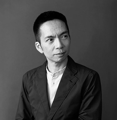
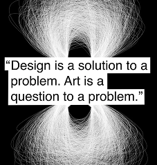
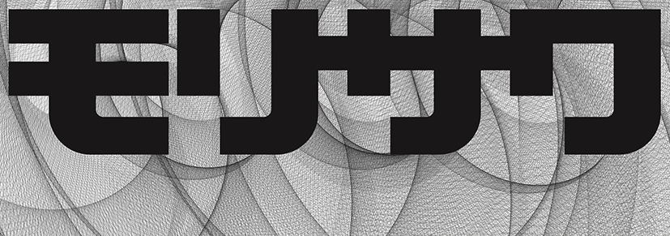
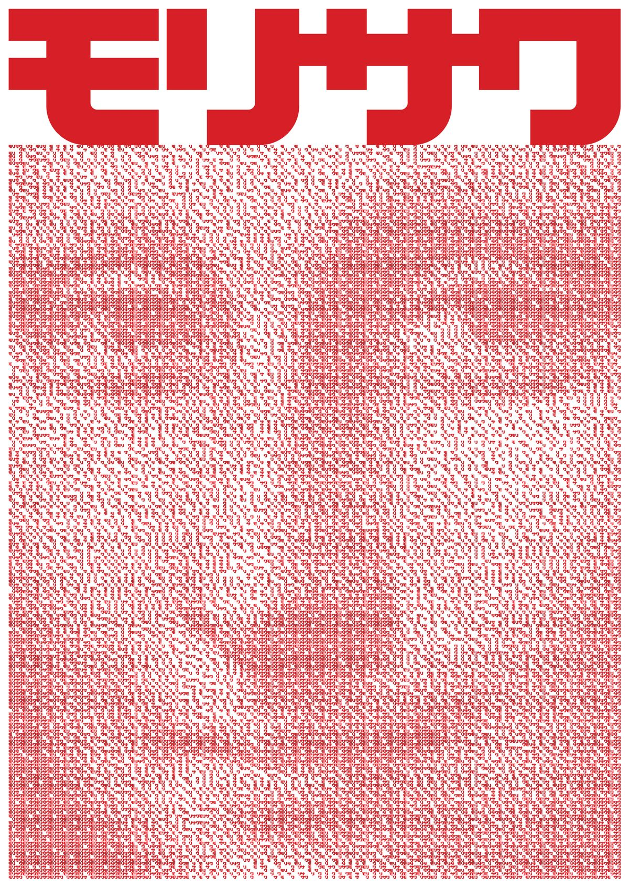
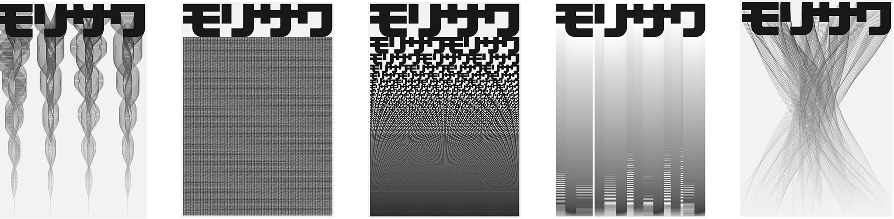
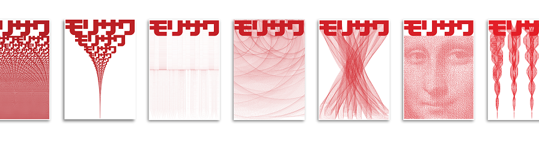
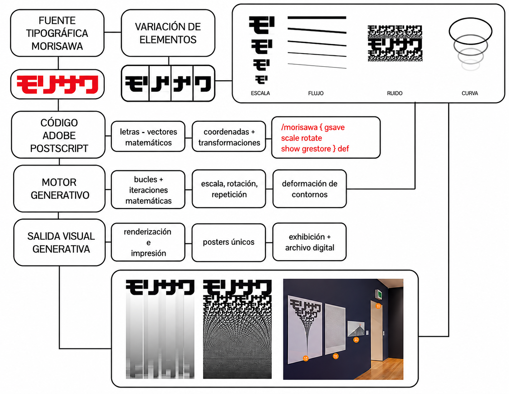

Es un diseñador, artista y programador reconocido por explorar la relación entre computación, arte y diseño visual. Su trabajo combina programación, sistemas digitales y experimentación gráfica, utilizando el código como una herramienta creativa.
Maeda es reconocido por promover la simplicidad dentro del diseño digital, defendiendo que la tecnología puede utilizarse para generar experiencias visuales más humanas.



Es una exploración visual y tipográfica donde se utilizan herramientas digitales para generar composiciones dinámicas a partir de tipografía. La obra trabaja con transformación de caracteres tipográficos, animación y variación constante, uso de código para generar visuales y relación entre datos, diseño y movimiento.
La tipografía deja de ser un elemento fijo y pasa a comportarse como un sistema visual dinámico, donde pequeñas variaciones generan nuevas composiciones gráficas. Las letras son manipuladas mediante procesos digitales que permiten deformarlas y reorganizarlas constantemente.



La tipografía y las imágenes están convertidas en datos digitales manipulables. Permite transformar letras mediante código y algoritmos..
El proyecto utiliza programación para generar visuales automáticamente. No todo depende del diseñador, sino de reglas y algoritmos.
La obra no es fija: existen múltiples versiones de las composiciones. Las formas tipográficas cambian constantemente en tiempo real.
Cada letra o elemento tipográfico funciona como una unidad independiente. Estos módulos se combinan para generar composiciones más complejas.
Se traduce información digital (código/datos) en visuales tipográficos. Hay una relación directa entre lógica computacional y forma visual.

El proyecto Morisawa 10 refleja claramente cómo el diseño contemporáneo deja de ser algo fijo para convertirse en un sistema programado y dinámico. A través del uso de código, la tipografía se transforma en un medio interactivo que encarna los principios de los nuevos medios propuestos por Manovich. Este tipo de proyectos nos permite comprender cómo el rol del diseñador evoluciona hacia la creación de sistemas, ampliando las posibilidades creativas del diseño contemporáneo.